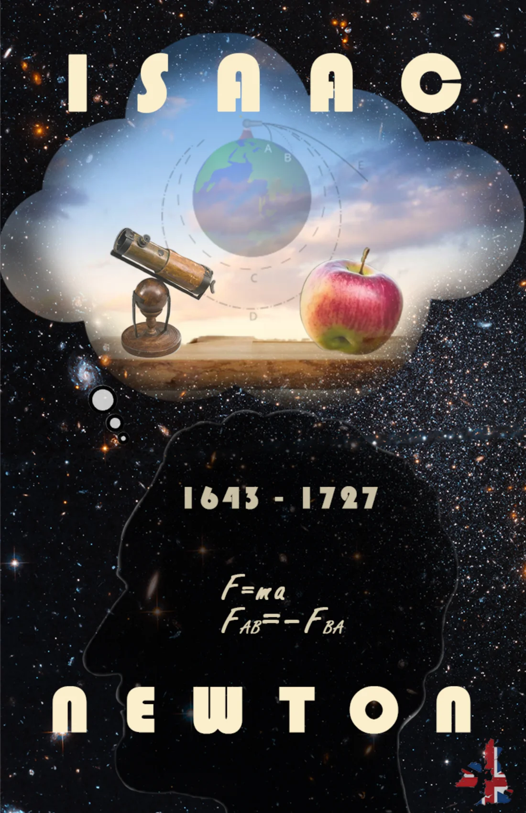

DES 16 · POSTER DESIGN · COURSEWORK
Isaac Newton — Visual Biography
A space-themed biographical poster communicating Isaac Newton’s scientific legacy through digital composition.

01 / COMPOSITE POSTER
Combining image, text and visual symbolism
The poster features Newton’s name, lifespan, a celestial background and symbolic scientific imagery. The brief in the archive documents the subject research; the artwork is a student-designed photo-composite poster incorporating reference imagery.
ORIGINAL SUBMISSION